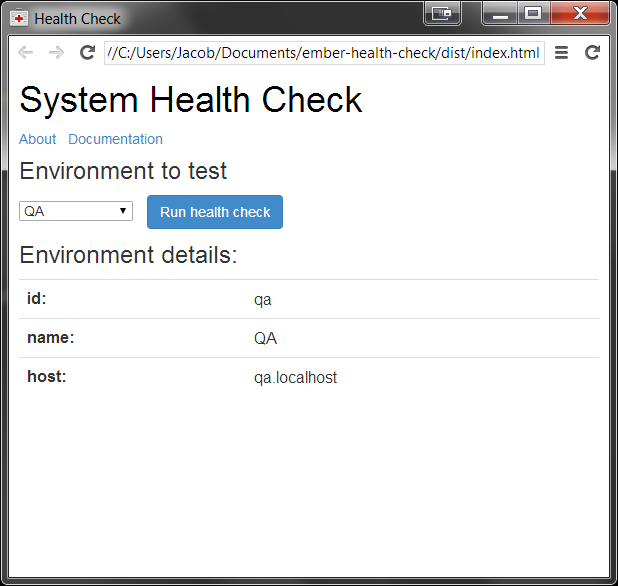

EmberMN Fall Kick-Off
Agenda
- 6:30 - Room opens
- 7:30 - Announcements & Lightning Talks
- 7:45 - Main Presentation
- 8:15 - Questions / general discussion / clean-up
- 8:30 - End of room reservation
Announcements
Future Meetings
Lightning Talks?
(Dream on, Jay, it's the first meetup, and you're hardly even ready.)
System Health Check App
a.k.a. Jay's first real attempt at using Ember
Jacob Quant <jacobq@gmail.com>
A little about me
- Computer geek since childhood
(QBASIC was gateway) - Electrical engineer by training
(wrote lots of firmware) - Switched to web in 2011
(n00b--I know, I know)
- iX3
 jacobq
jacobq- jacobq_
Profile Questions
- What do you hope to get from this meetup?
Learn some EmberJS and meet local colleagues interested in rich JavaScript applications.
- Are you currently using Ember for any projects?
No, but I would like to in the future.
- Are you willing to present on a topic?
Only if it's something about which I have solid experience (i.e. not Ember)
Motivation
- Quick way to check that systems are working properly
- Easy-to-use tool to aid incident handlers in routing
- Maintainable by web development team
Design choices
- Separate UI from actual task running
- Package with
node-webkit - Originally built w/o any MV* framework
(started rebuilding with Ember for this talk)
Excuses, excuses, ...
- "Didn't have time" to learn an MV* framework...
- "Didn't have time" for UX design...
- "Didn't have time" for testing...
It looked like this...
...not so bad, right?
Ick! Did I write that?
Starting over with Ember
- I had hoped to have it "finished" for tonight--sorry
- Feel free to peek|help|laugh
github.com/jacobq/health-check-using-ember
So far it looks like this...
...OK, any maybe like this...
...but the code actually has some structure to it now

What is node-webkit?
BTW
There's another (much better) talk on this subject from the SF Ember Meetup: Building Desktop Apps with Ember and Node-Webkit
Thanks for putting up with me
and special thanks to Debbie Gillespie and the University of Minnesota for hosting us tonight. I know it wasn't much of a MeetUp, but it's a starting point, and I'm optimistic about the future.